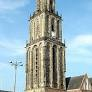

D'olle Grieze
Wanneer je naar Groningen komt, zie je hem al ver boven de stad uitsteken. De Martinitoren. Al eeuwenlang kijkt d’Olle Grieze uit over het centrum, met de Grote Markt aan zijn voeten. Als je in de binnenstad van Groningen bent, mag een bezoek aan deze toren dan ook echt niet ontbreken. Klim omhoog tot achter de klokken en geniet van een vrij uitzicht over de stad. De Martinitoren, staande aan de Grote Markt, is met zijn 96,8 meter de hoogste toren van de stad Groningen. De toren hoort bij de Martinikerk. Voor de stadjers, de inwoners van de stad, heeft de toren de bijnaam d' Olle Grieze, Gronings voor de oude grijze. De huidige Martinitoren had twee voorgangers. In de 13e eeuw werd de eerste toren gebouwd.
 In het hart van Groningen staat het Forum, een ontmoetingsplek voor iedereen die nieuwsgierig is naar de wereld van nu en de mogelijkheden van morgen. Met grote exposities, museum Storyworld, vijf filmzalen, de bibliotheek, het Smartlab, horeca en een dakterras met fenomenaal uitzicht.
In het hart van Groningen staat het Forum, een ontmoetingsplek voor iedereen die nieuwsgierig is naar de wereld van nu en de mogelijkheden van morgen. Met grote exposities, museum Storyworld, vijf filmzalen, de bibliotheek, het Smartlab, horeca en een dakterras met fenomenaal uitzicht.